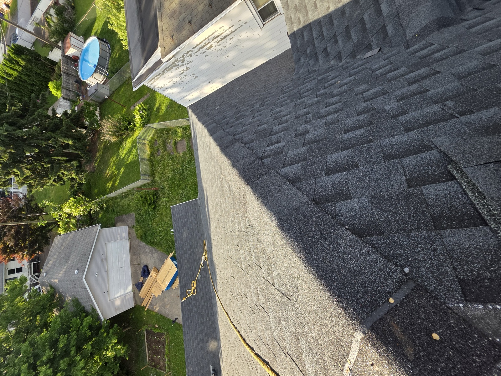
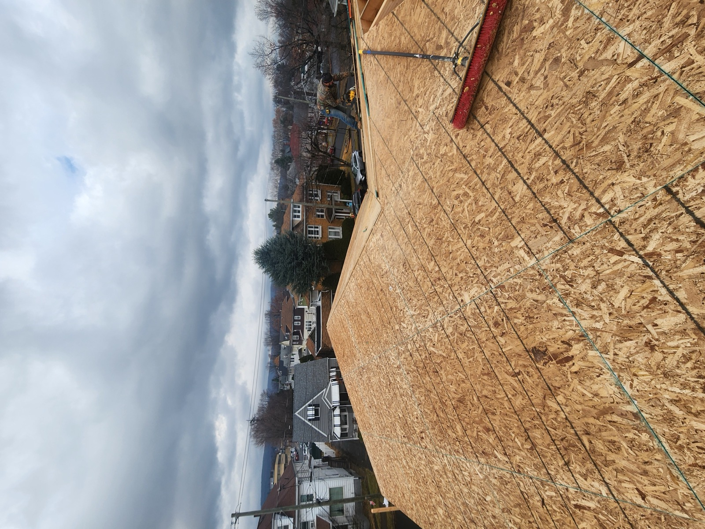
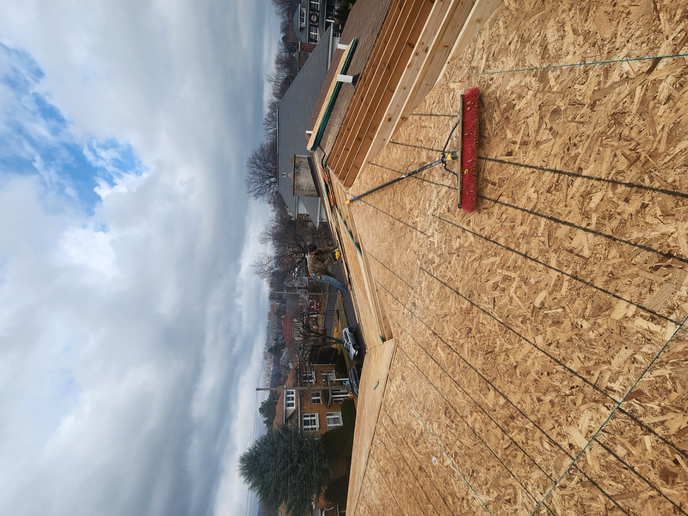
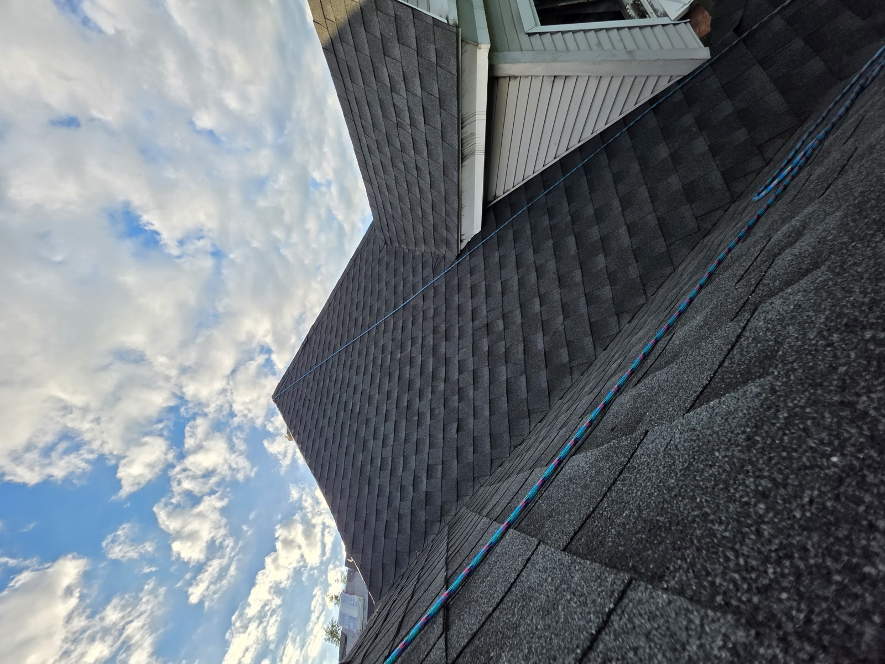
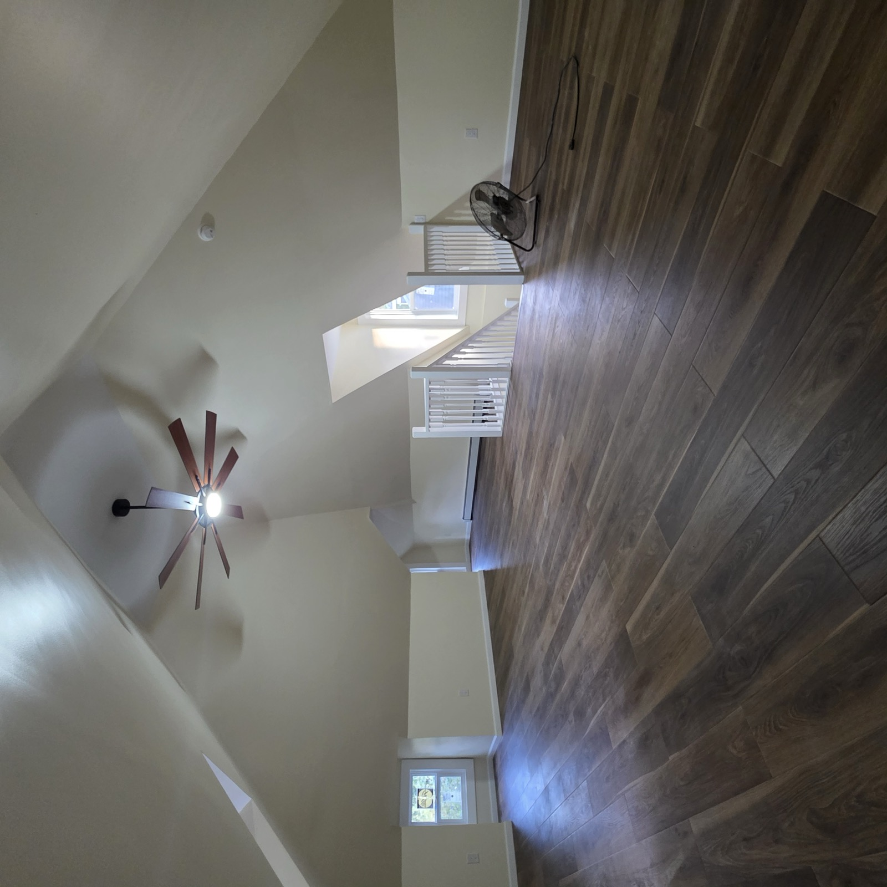
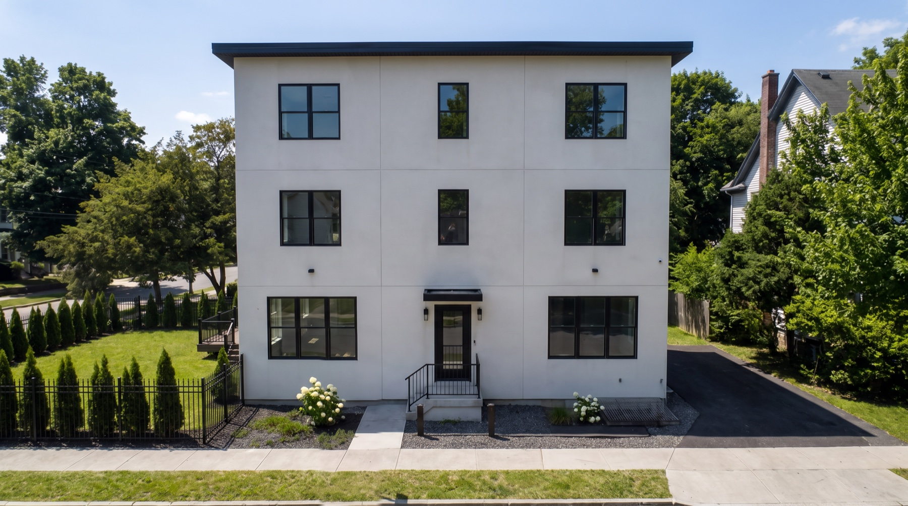

PSI Construction · Kingston & Wilkes-Barre, PA
Shingle Roofing Contractor — Replacement & New Roofs in Luzerne County
We roof the houses we build, and we re-roof the ones we don't. Decking checked and replaced where it's gone, ice-and-water at the eaves and valleys, flashing done properly at every penetration — then the shingles. The part that keeps the water out is underneath.
How it goes
How we replace a roof
-
1
Inspect & quote
Decking, flashing, ventilation and the age of what's there. A fixed price, not an estimate.
-
2
Tear-off
Old roofing stripped, decking exposed and checked board by board.
-
3
Deck repair
Soft or rotted sheathing replaced before anything goes over it.
-
4
Underlayment & flashing
Ice-and-water shield at eaves and valleys, synthetic underlayment, new flashing at every penetration.
-
5
Shingles & ventilation
Architectural shingles laid to the manufacturer's spec; ridge vent and intake balanced.
-
6
Clean up & warranty
Magnet sweep, haul-away, warranty paperwork in your hand.
From our jobs
Shingle roofing we have built
Every photograph here is a PSI job in Luzerne County. See all 290+ photographs on the map →





Get a quote
Tell us about your roofing project
A few multiple-choice questions so we show up already knowing the job. Every one has a “not sure yet” option. Or call — 570-338-8PSI (774).